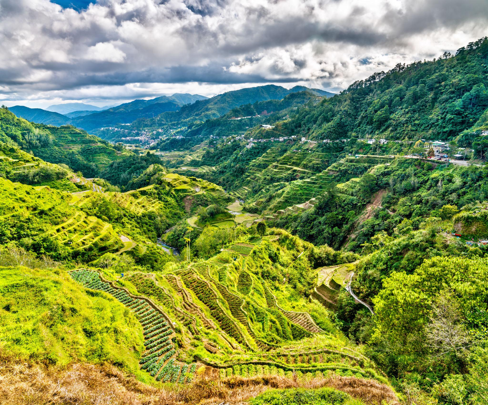
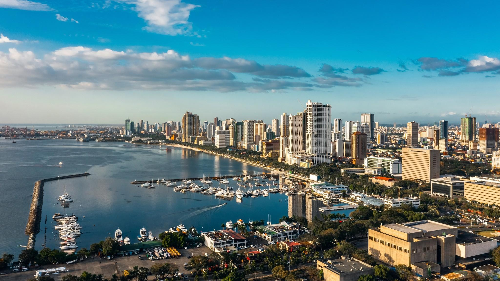
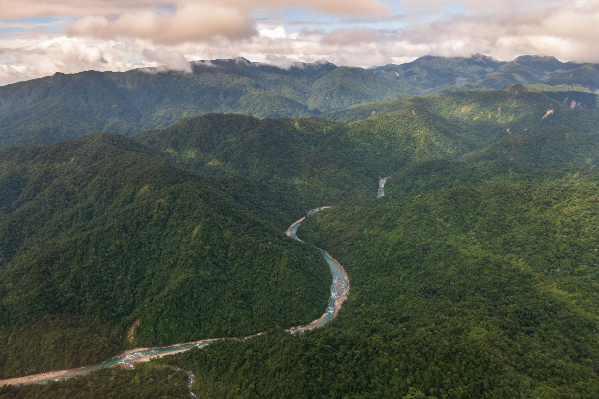

About Luzon



Luzon is the largest and most populous island in the Philippines. It is located in the northern part of the country and serves as an important center for government, business, education, and tourism.
Quick Facts:
- Location: Northern Philippines
- Largest city: Quezon City
- Capital of the Philippines: Manila
- Major regions: Ilocos, Cagayan Valley, Central Luzon, CALABARZON, Bicol, and the National Capital Region
- Known for: Mountains, historical landmarks, beaches, and cultural heritage